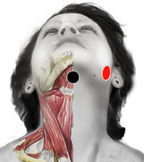

Neisseria Gonorrhoeae
Pares
mandíbula - mandíbula
lumbar 4 - lumbar 4

Generalidades:
Falsa Artritis Reumatoide. Problemas de Columna a este nivel (lumbar 4). Uretritis, Piuría (pus en la orina). Faringitis, Flujo Vaginal, checar par: MANDÍBULA. Uretritis (salida de pus por la vagina o el pene). Rastrear ambos lados (de la mandíbula) y despolarizar en puntos de barba.
Asociado con Meningococo (Dorso-Lumbar) produce Verdadera Artritis Reumatoide.
Cuando se ubica en la mandíbula provoca Gingivitis, Piorrea (sangrado de los dientes).
Transmisión:
Transmisión sexual